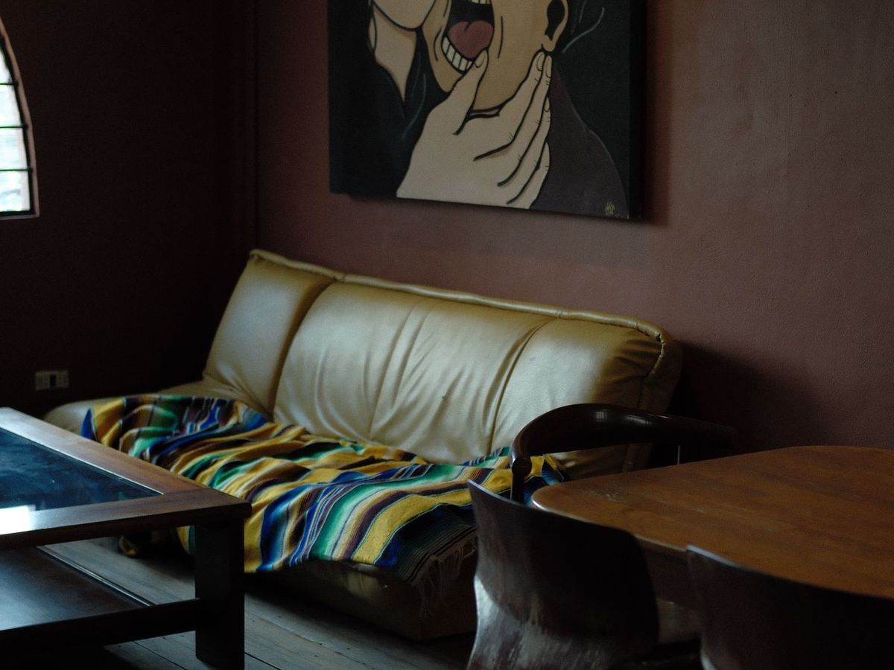
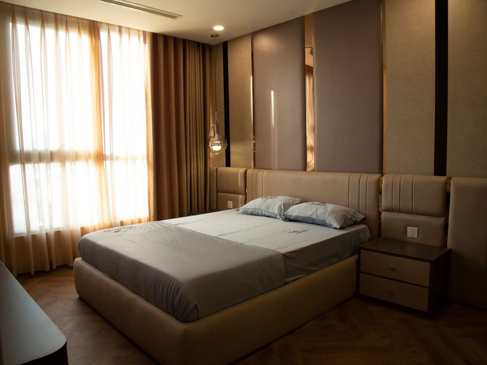

TREND 01
에스프레소 브라운
배분 60 · 30 · 10
어둡고 따뜻한 갈색이 회색을 대신하는 “새 뉴트럴”이 됐습니다.
왜 지금인가
벤자민무어가 2026년 올해의 색으로 에스프레소에 차콜을 섞은 ‘실루엣’을 내놓았고, NKBA가 정리한 11개 페인트 회사의 2026 올해의 색도 그린을 주역, 브라운을 조연으로 같은 방향을 가리켰습니다. 검색 데이터도 따라옵니다. Houzz 2026 리포트에서 초콜릿 브라운 검색이 153% 늘었고, 녹슨 주황(rust)은 178%, 세이지는 55% 늘었습니다. 회색 벽이 밋밋하게 느껴진 사람들이 벽 한 면만 무게 있게 눌러 주는 쪽으로 옮겨 간 결과입니다.
매장에서 권하는 쓰임
- 포인트 벽거실·서재 한 면. 나머지 벽은 크림 화이트로 두고 30%만 갈색으로 눌러 줍니다. 천장까지 칠하면 방이 낮아 보이므로 벽에서 끊는 편이 안전합니다.
- 문 · 몰딩벽보다 한 톤 진하게. 문틀과 걸레받이를 갈색으로 바꾸는 것만으로 공간이 정돈됩니다. 손때가 많은 곳이라 반광(세미글로스)이 실용적입니다.
- 현관무광 매트. 어두운 현관은 신발 자국과 얼룩이 덜 보이고, 들어설 때 시선이 정리됩니다.
- 도료실내는 무광 에멀젼, 문·몰딩은 반광 에나멜. 갈색은 광이 서면 얼룩이 도드라지므로 벽은 반드시 무광으로.
매장에서 맞추는 색
삼화 [4자리+A~E]는 컬러칩 번호입니다. 견적·조색 요청 때 이 번호를 먼저 말하면 매장에서 바로 찾습니다.


근거 NKBA 2026 Colors of the Year · Benjamin Moore Silhouette · Houzz 2026 검색 리포트 · 사진 Pexels(무료 라이선스)